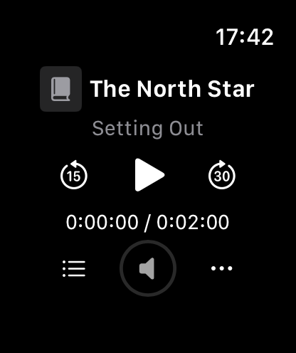

Just your watch.
Sign in on Apple Watch and browse the libraries your account can access. No iPhone companion app required.
Bring your Audiobookshelf books and podcasts along. Stream a chapter, save a whole story, and keep your place wherever you listen.
App Store release in preparation.

A look inside · demo library
Sign in on Apple Watch and browse the libraries your account can access. No iPhone companion app required.
Start without a full download, or save books and podcast episodes for offline listening. Pause, resume and manage downloads from your wrist.
Use chapters, skip controls, adjustable speed and a sleep timer. Progress stays on your watch and syncs to your server when connected.
You’ll need Apple Watch with watchOS 27 or later and an Audiobookshelf server and account. Wristshelf doesn’t provide media or a hosted server. Audiobookshelf 2.36.1 is the compatibility baseline. Ebooks are not supported. Wristshelf is independent and is not endorsed by Audiobookshelf.